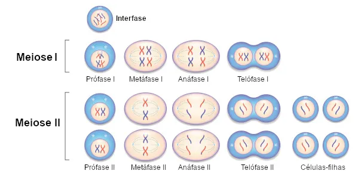
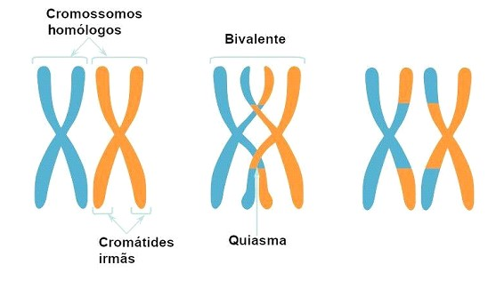
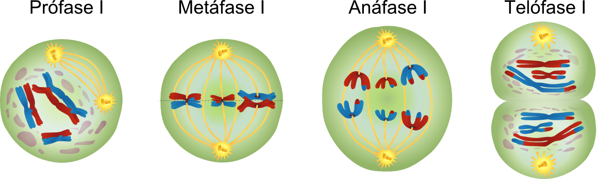
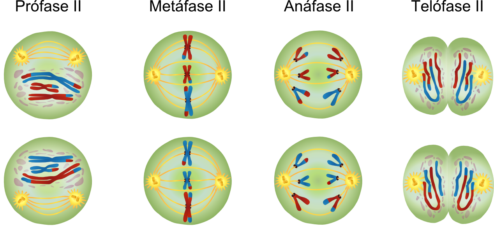

Meiose
A meiose pode ser definida como um tipo de divisão celular em que são formadas quatro células-filhas com metade dos cromossomos da célula parental. A meiose é um processo semelhante à mitose, entretanto, na meiose observam-se duas divisões celulares, as quais são chamadas de meiose I e meiose II.
A meiose é um processo de divisão celular muito importante, pois atua garantindo a manutenção do número de cromossomos nas espécies e também se relaciona com o aumento da variabilidade genética.
Fases da Meiose
A meiose é um processo de divisão celular que promove o surgimento de quatro células-filhas, as quais possuem metade do número de cromossomos da célula da qual foram originadas. Durante esse processo, observamos
a ocorrência de duas divisões celulares consecutivas, que recebem os nomes meiose I e meiose II. Vale salientar que a meiose, assim como a mitose, é precedida da duplicação dos cromossomos, um processo que ocorre na chamada interfase.
⠀⠀⠀⠀⠀⠀⠀⠀

⠀⠀⠀⠀⠀⠀⠀⠀
Meiose I
A meiose I caracteriza-se por ser a primeira divisão da meiose, sendo esta uma etapa chamada de reducional, pois ela originará duas células com metade do conjunto de cromossomos original. A meiose I pode ser dividida didaticamente em prófase I, metáfase I, anáfase I e telófase I.
Prófase I
⠀⠀A prófase I é a primeira etapa da meiose I, e, assim como na mitose, observa-se a movimentação do centrossomo, formação do fuso, quebra do envelope nuclear e condensação progressiva dos cromossomos. Didaticamente, costuma-se dividir a prófase I da meiose em cinco fases: leptóteno, zigóteno, paquíteno, diplóteno e diacinese.
- Leptóteno: Os cromossomos, que já estão duplicados, começam a se condensar. Cada cromossomo é composto por duas cromátides irmãs unidas pelo centrômero.
- Zigóteno: Os cromossomos homólogos se pareiam com a ajuda do complexo sinaptonêmico, formando uma estrutura chamada bivalente ou tétrade, que contém quatro cromátides.
- Paquíteno: O complexo sinaptonêmico permite o alinhamento completo dos cromossomos homólogos, possibilitando o crossing over, onde ocorre a troca de material genético, aumentando a variabilidade genética.
- Diplóteno: Os cromossomos homólogos começam a se separar, mas permanecem conectados pelos quiasmas, que são locais de crossing over.
- Diacinese: É a fase final da prófase I, onde os cromossomos homólogos se separam definitivamente, ainda ligados pelos quiasmas, e o envelope nuclear se fragmenta.
⠀⠀⠀⠀⠀⠀⠀⠀

⠀⠀⠀⠀⠀⠀⠀⠀
Metáfase I
⠀⠀Na metáfase I, os cromossomos homólogos estão dispostos na região equatorial
da célula, estando um cromossomo de cada par direcionado para um dos polos
da célula
Anáfase I
⠀⠀Na anáfase I, cada cromossomo homólogo se move em direção a polos opostos,
sendo guiados pelas fibras do fuso. No centrômero, a coesão entre as
cromátides irmãs permanece, garantindo, portanto, que elas se movimentem
como uma unidade. Assim sendo, apenas cada par de cromossomo homólogo
se separa durante essa fase, um processo que garante a redução do número de
cromossomos
Telófase I e Citocinese
⠀⠀Ao ter início a telófase I, verifica-se que cada metade da célula apresenta um
conjunto haploide completo de cromossomos duplicados. Nessa etapa pode
ocorrer de os cromossomos se descondensarem e o envelope nuclear se formar
novamente, entretanto, são processos que nem sempre acontecem.
Simultaneamente à telófase I, observa-se a ocorrência da citocinese, ou seja, da
divisão do citoplasma da célula e a formação de duas células-filhas haploides
⠀⠀⠀⠀⠀⠀⠀⠀

⠀⠀⠀⠀⠀⠀⠀⠀
Meiose II
⠀⠀A meiose II é a segunda divisão da meiose, sendo essa etapa considerada equacional. Ela é chamada de equacional porque ocorre apenas a separação das cromátides. É importante deixar claro que, entre a meiose I e a meiose II, não há nenhuma duplicação do material genético. A meiose II é bastante parecida com uma divisão mitótica.
Prófase II:
⠀⠀: as células iniciais são as células haploides produzidas na meiose I. Os cromossomos condensam-se e o envelope nuclear é rompido, se necessário. Os centrossomos se separam, o fuso é formado entre eles, e os microtúbulos do fuso começam a capturar os cromossomos. As duas cromátides-irmãs de cada cromossomo são capturadas pelos microtúbulos dos polos opostos do fuso.
Metáfase II
⠀⠀Na metáfase II, os cromossomos estão alinhados na placa metafásica e os cinetocoros (complexo formado por proteínas e localizado no centrômero) das cromátides irmãs estão ligados aos microtúbulos dos polos opostos.
Anáfase II
⠀⠀Na anáfase II, os centrômeros separam-se, e as cromátides, agora separadas, migram para os polos opostos. As cromátides, a partir desse momento, ficam como cromossomos individuais.
Telófase II
⠀⠀Na telófase II, última etapa da meiose, há uma reorganização da célula. O envoltório nuclear e o nucléolo reaparecem, os cromossomos começam a se descondensar e, ao mesmo tempo em que a telófase ocorre, o citoplasma divide-se (citocinese). Nessa etapa, formam-se duas células-filhas para cada célula que iniciou a meiose II.
⠀⠀⠀⠀⠀⠀⠀⠀

⠀⠀⠀⠀⠀⠀⠀⠀
⠀⠀⠀⠀⠀⠀⠀⠀
Variabilidade Genética
⠀⠀⠀⠀⠀⠀⠀⠀
⠀⠀Como dito anteriormente, na meiose ocorrem processos que podem gerar células-filhas diferentes entre si em material genético. Esses processos garantem a variabilidade genética. São dois processos que diferenciam as células geradas na meiose: Crossing-Over e segregação independente dos homólogos.
- Crossing Over: Também é chamado de recombinação ou permutação. O processo ocorre na Prófase I, quando acontece o pareamento de homólogos. Nesse pareamento, os cromossomos homólogos ficam tão próximos que podem, literalmente, trocar trechos de DNA das suas extremidades. Dessa forma, um cromossomo de origem paterna pode conter em uma das cromátides-irmãs um trecho do cromossomo materno e vice-versa. Com isso, quando os cromossomos de uma célula durante a meiose I sofrem crossing-over, ao final são geradas quatro células diferentes em termos de material genético.
- Segregação independente dos homólogos: A própria separação dos cromossomos homólogos na Anáfase I já pode garantir variabilidade entre as células geradas. A segregação independente relaciona todas as possibilidades de separação dos cromossomos existentes.
Por exemplo: em uma célula com três pares de cromossomos homólogos, há seis cromossomos ao todo, três de origem paterna (vindos do espermatozóide) e três de origem materna (contidos no óvulo). Ao separar esses cromossomos homólogos na Anáfase I, é possível gerar uma célula com um cromossomo paterno e dois maternos, dois paternos e um materno, três paternos e assim por diante.